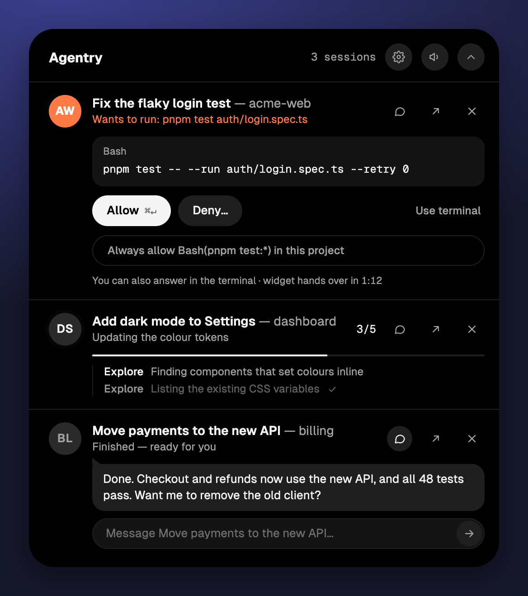

Approve without switching windows
When Claude wants to run a command or change a file, the request drops out of the notch with the whole command or diff. Allow it with a click or ⌘↵. The terminal can still answer, and whichever is first wins.
